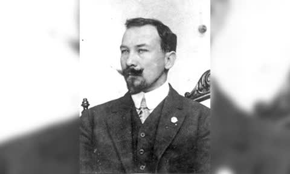

Casa García de Quintanilla · Lampazos

Farmacéutico, liberal y masón · Lampazos de Naranjo (N.L.) y Laredo (Texas) · 1849 – 1904
Farmacéutico, ganadero y liberal de Lampazos de Naranjo, Nuevo León; presidente municipal, opositor a Porfirio Díaz y fundador en Laredo de la logia «Benito Juárez», la primera logia mexicana de Texas. Padre del escritor y ministro Nemesio García Naranjo.
Nemesio García y García nació en Lampazos de Naranjo, Nuevo León (1849, según la ficha del archivo; la fuente texana consultada no da año) y murió el 20 de noviembre de 1904, tras un derrame cerebral. Farmacéutico de profesión, con negocios y ganado en México, fue un liberal reconocido en la región fronteriza y opositor del presidente Porfirio Díaz. Estuvo casado con Juana Naranjo Pérez.
Fue presidente municipal (alcalde) de Lampazos. A comienzos de 1886, después de descubrir un plan militar para asesinar a opositores de Díaz en Lampazos, huyó con su familia a Laredo, Texas; el hijo estudió la primaria en Encinal, Texas, entre 1888 y 1894.
El hijo, Nemesio García Naranjo (Lampazos, 8 de marzo de 1883 – Ciudad de México, 21 de diciembre de 1962), fue abogado, escritor, historiador y periodista; diputado al Congreso, y ministro de Instrucción Pública con Victoriano Huerta en 1913–1914. Según la ficha del archivo casó en 1912 con Angelina Natalia Elizondo Cisneros. Tras el triunfo constitucionalista salió desterrado en 1914 y en 1915 llegó a Laredo, donde residían su padre y sus hermanos (según Wikipedia).
La logia «Benito Juárez» de Laredo y su papel como liberal de la frontera lo ubican entre los pioneros de la comunidad mexicana de Texas. Es el vínculo de la casa García de Lampazos con la historia nacional a través de su hijo.
Notas editoriales. (1) Sin retrato: no se conoce una imagen verificada de don Nemesio. La foto que acompaña su ficha en GitHub Pages (archivo «nemesio-garcia-naranjo.jpg») es de su hijo, García Naranjo; por eso el pie de foto la identifica como la del hijo. (2) La ficha del archivo lo enlaza con la línea de los García del Huachichil (casa García de Quintanilla, Lampazos); ese enlace está en investigación: el archivo no tiene acta que lo pruebe. (3) Fecha y lugar de nacimiento exactos, padres y hermanos: pendientes de acta.
Lampazos de Naranjo, 1849–20 de noviembre de 1904. Presidente municipal. Farmacéutico. Masón. Fundó en Laredo la logia Benito Juárez, primera logia mexicana en Texas. Esposo de Juana Naranjo Pérez.
El hijo, Nemesio García Naranjo, nace el 8 de marzo de 1883 en Lampazos. Abogado, diputado, ministro de Instrucción Pública con Huerta, académico. Casa en 1912 con Angelina Natalia Elizondo Cisneros.
Línea de Lampazos. Enlace con los García del Huachichil.
Esta biografía también está publicada, con sus fuentes, en genealogiasefardi.site. Información avalada por Sefarad MX y genealogiasefardi.site.